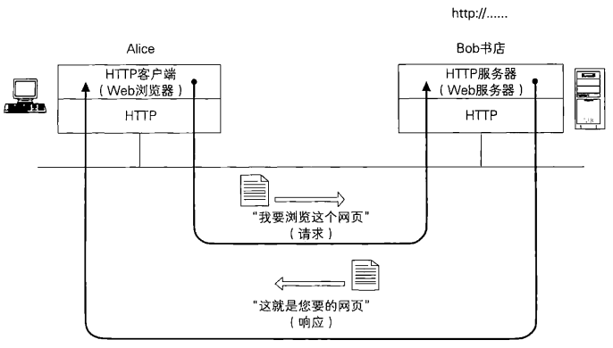

9. SSL/TLS
1 | "SSL/TLS --- 为了更安全的通信" |
SSL/TLS是世界上应用最广泛的密码通信方法。比如说，当在网上商城中输人信用卡号时，我们的Web浏览器就会使用SSL/TLS进行密码通信。使用SSL/TLS可以对通信对象进行认证，还可以确保通信内容的机密性。
SSL/TLS中综合运用了之前所学习的对称密码、消息认证码、公钥密码、数字签名、伪随机数生成器等密码技术。严格来说，SSL（Secure Socket Layer)与TLS（Transport Layer Security）是不同的，TLS相当于是SSL的后续版本。不过，本章中所介绍的内容，大多是SSL和TLS两者兼备的，因此除具体介绍通信协议的部分以外，都统一写作SSL/TLS。
9.1 客户端与服务器
Bob书店是Alice经常光顾的一家网店，因为在Bob书店她可以搜索到新出版的图书，还可以通过信用卡快速完成支付，购买的书还能快递到家，真的很方便。
有一天，Alice 读了一本关于网络信息安全的书，书上说“互联网上传输的数据都是可以被窃听的”。Alice感到非常担心，自己在购买新书的时候输人的信用卡号会不会被窃听呢？
Alice看到Bob书店的网站下面写着一行字：“在以https://开头的网页中输人的信息将通过SSL/TLS发送以确保安全”。
的确，输人信用卡号的网页的URL是以 https:// 开头的，而不是一般的 http://。此外．在浏览这个网页时，Alice的web浏览器上还会显示一个小锁头的图标，看上去好像挺安全的。
但Alice心想，就算写着“通过SSL/TLS发送”我也不放心啊，到底在我的Web浏览器和Bob书店的网站之间都发生了哪些事呢？
本章将要介绍的技术一一SSL/TLS就可以解答Alice的疑问。当进行SSL/TLS通信时，Web浏览器上就会显示一个小锁头的图标。
Alice的Web浏览器（客户端）和Bob书店的网站（服务器）进行HTTP通信

Alice和Bob书店之间的通信，实际上是Alice所使用的Web浏览器和Bob书店的Web服务器之间的通信。Web浏览器是Alice的计算机上运行的一个程序，而web服务器则是在Bob书店的计算机上运行的一个程序，它们都遵循一种叫作HTTP（Hyper Text Transfer Protocol, 超文本传输协议）的协议（protocol)来进行通信。其中，Web浏览器称为HTTP客户端，Web服务器称为HTTP服务器。
当Alice点击网页上的链接或者输人URL时，Web浏览器就会通过网络向Web服务器发送一个 “我要浏览这个网页“，的请求（request）。
Web服务器则将请求的网页内容发送给Web浏览器，以便对请求作出响应（response）。服务器和客户端之间所进行的处理就是请求和响应的往复。HTTP可以认为是在HTTP客户端与HTTP服务器之间进行请求和响应的规范。
Alice向Bob书店发送信用卡号也是使用HTTP来完成的（下图）。Alice输人信用卡号之后按下提交按钮，这时客户端（Web浏览器）就会将信用卡号作为HTTP请求发送给服务器。服务器则会将“生成订单”的网页作为HTTP响应返回给客户端。
不过，如果直接发送请求的话，信用卡号就很可能被窃听。下一节我们将探讨针对这种风险的对策。
**不使用SSL/TLS发送信用卡号的情形**
9.2 用SSL/TLS承载HTTP
什么是SSL,什么是TLS呢？官话说SSL是安全套接层(secure sockets layer)，TLS是SSL的继任者，叫传输层安全(transport layer security)。说白点，就是在明文的上层和TCP层之间加上一层加密，这样就保证上层信息传输的安全。如HTTP协议是明文传输，加上SSL层之后，就有了雅称HTTPS。它存在的唯一目的就是保证上层通讯安全的一套机制。
当Web浏览器发送信用卡号时，信用卡号的数据会作为客户端请求发送给服务器。如果通信内容被窃听者Eve所窃取，Eve就会得到信用卡号。
于是，我们可以用SSL（Secure Socket Layer）或者TLS（Transport Layer Security）作为对通信进行加密的协议，然后在此之上承載HTTP（下图）。通过将两种协议进行叠加，我们就可以对HTTP的通信（请求和响应）进行加密，从而防止窃听。通过SSL/TLS进行通信时，URL不是以http://开头，而是以https://开头。
以上就是SSL/TLS的简单介绍。

在大致了解了SSL/TLS之后，我们来整理一下SSL/TLS到底负责哪些工作。我们想要实现的是，通过本地的浏览器访问网络上的web服务器，并进行安全的通信。用上边的例子来说就是，Alice希望通过web浏览器向Bob书店发送信用卡号。在这里，我们有几个必须要解决的问题。
- Alice的信用卡号和地址在发送到Bob书店的过程中不能被窃听。
- Alice的信用卡号和地址在发送到Bob书店的过程中不能被篡改。
- 确认通信对方的Web服务器是真正的Bob书店。
在这里，（1）是机密性的问题；（2）是完整性的问题；而（3）则是认证的问题。
要确保机密性，可以使用对称加密。由于对称加密算法的密钥不能被攻击者预测，因此我们使用伪随机数生成器来生成密钥。若要将对称加密的密钥发送给通信对象，可以使用非对称加密算法完成密钥交换。要识别篡改，对数据进行认证，可以使用消息认证码。消息认证码是使用单向散列函数来实现的。
要对通信对象进行认证，可以使用对公钥加上数字签名所生成的证书。
好，工具已经找齐了，下面只要用一个“框架”（framework）将这些工具组合起来就可以了。SSL/TIS协议其实就扮演了这样一种框架的角色。
SSL/TLS也可以保护其他的协议
刚才我们提到用SSL/TLS承载HTTP通信，这是因为HTTP是一种很常用的协议。其实SSL/TLS上面不仅可以承载HTTP，还可以承载其他很多协议。例如，发送邮件时使用的SMTP（Simple Mail Transfer Protocol, 简单邮件传输协议）和接收邮件时使用的POP3（Post Office Protocol，邮局协议）都可以用SSL/TLS进行承载。在这样的情况下，SSL/TLS就可以对收发的邮件进行保护。
用SSL/TLS承载HTTP、SMTP和POP3的结构如下图所示。一般的电子邮件软件都可以完成发送和接收邮件这两种操作，其实是同时扮演了SMTP客户端和POP3客户端这两种角色。

9.3 https
9.3.1 http和https
HTTP协议：是互联网上应用最为广泛的一种网络协议，是一个客户端和服务器端请求和应答的标准（TCP），用于从WWW服务器传输超文本到本地浏览器的传输协议，它可以使浏览器更加高效，使网络传输减少。
HTTPS：是以安全为目标的HTTP通道，简单讲是HTTP的安全版，即HTTP下加入SSL/TLS层，HTTPS的安全基础是SSL/TLS，因此加密的详细内容就需要SSL/TLS。
HTTPS协议的主要作用可以分为两种：
- 建立一个信息安全通道，来保证数据传输的安全；
- 确认网站的真实性。
HTTPS和HTTP的区别主要如下：
1、https协议需要到ca申请证书，一般免费证书较少，因而需要一定费用。
2、http是超文本传输协议，信息是明文传输，https则是具有安全性的ssl/tls加密传输协议。
3、http和https使用的是完全不同的连接方式，用的端口也不一样，前者是80，后者是443。
4、http的连接很简单，是无状态的；HTTPS协议是由SSL/TLS+HTTP协议构建的可进行加密传输、
身份认证的网络协议，比http协议安全。
9.3.2 https优缺点
https的优点
尽管HTTPS并非绝对安全，掌握根证书的机构、掌握加密算法的组织同样可以进行中间人形式的攻击，但HTTPS仍是现行架构下最安全的解决方案，主要有以下几个好处：
- 使用HTTPS协议可认证用户和服务器，确保数据发送到正确的客户机和服务器；
- HTTPS协议是由SSL+HTTP协议构建的可进行加密传输、身份认证的网络协议，要比http协议安全，可防止数据在传输过程中不被窃取、改变，确保数据的完整性。
- HTTPS是现行架构下最安全的解决方案，虽然不是绝对安全，但它大幅增加了中间人攻击的成本。
- 谷歌曾在2014年8月份调整搜索引擎算法，并称 “比起同等HTTP网站，采用HTTPS加密的网站在搜索结果中的排名将会更高”。
https的缺点
虽然说HTTPS有很大的优势，但其相对来说，还是存在不足之处的：
- HTTPS协议握手阶段比较费时，会使页面的加载时间延长近50%，增加10%到20%的耗电；
- HTTPS连接缓存不如HTTP高效，会增加数据开销和功耗，甚至已有的安全措施也会因此而受到影响；
- SSL/TLS证书需要钱，功能越强大的证书费用越高，个人网站、小网站没有必要一般不会用。
- SSL/TLS证书通常需要绑定IP，不能在同一IP上绑定多个域名，IPv4资源不可能支撑这个消耗。
- HTTPS协议的加密范围也比较有限，在黑客攻击、拒绝服务攻击、服务器劫持等方面几乎起不到什么作用。最关键的，SSL证书的信用链体系并不安全，特别是在某些地方可以控制CA根证书的情况下，中间人攻击一样可行。